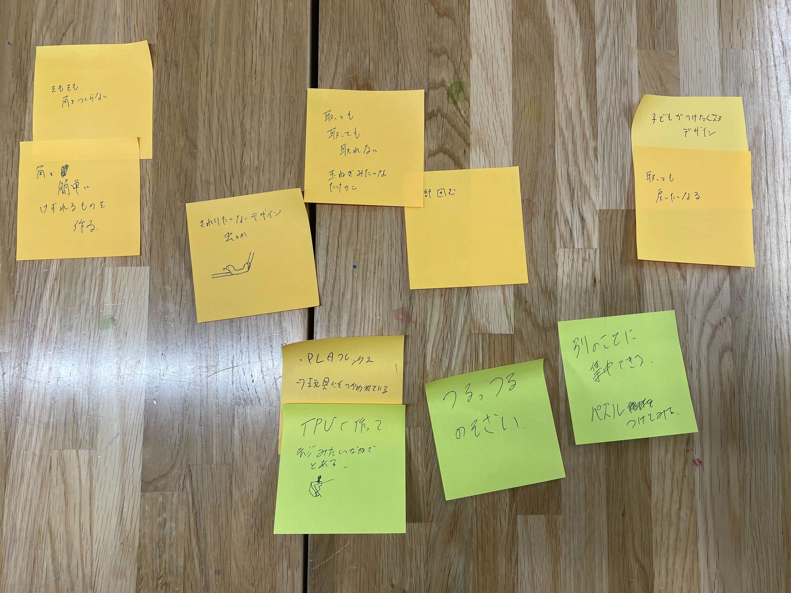

2025横浜サーキュラープロジェクト 5/25 2025 Doyolab フォーカスする課題とアプローチ 間伐材の有効活用 →横浜の水資源のための森の間引きした間伐材の有効活用 紙資源の循環 →紙製容器のリサイクル率は２５％、プラスチックから紙にする運動とプラスチックのリサイクルはうまくいっている 暑熱対策 →紙は断熱性を持っている、それを生かすことはできないか 次回までの課題 暑熱対策リサーチ 紙製容器包装見つけたら#all_紙製容器包装 に報告 Post it 